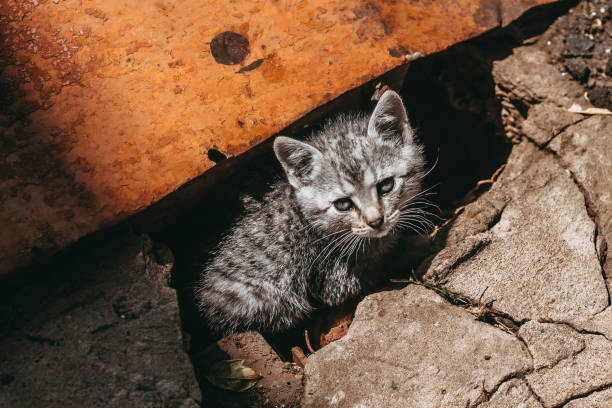
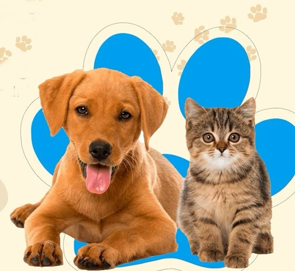
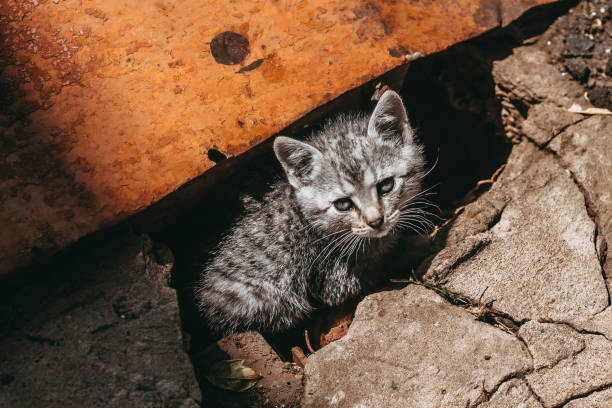
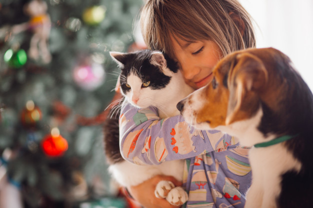
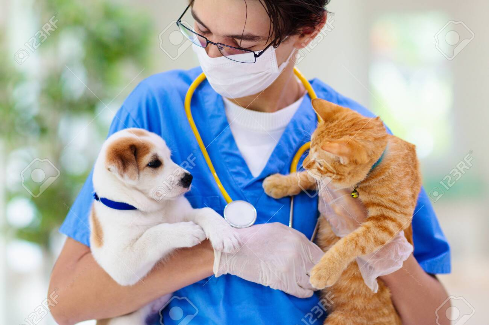

Resgate de Animais
Realizamos o resgate de animais abandonados ou em situação de risco, garantindo acolhimento, cuidado e segurança desde o primeiro momento. Cada resgate é um passo rumo a uma nova vida cheia de amor e proteção. 💖

Nossa missão é acolher, proteger e transformar vidas, oferecendo uma nova chance a animais em situação de risco. Trabalhamos com amor, dedicação e esperança para garantir que cada patinha encontre um lar seguro e cheio de carinho. 💕 Junte-se a nós nessa jornada de compaixão e cuidado — juntos, podemos fazer a diferença!
Realizamos o resgate de animais abandonados ou em situação de risco, garantindo acolhimento, cuidado e segurança desde o primeiro momento. Cada resgate é um passo rumo a uma nova vida cheia de amor e proteção. 💖
Facilitamos o processo de adoção com responsabilidade e carinho, garantindo que cada animal encontre um lar seguro, amoroso e cheio de cuidado. 🏡💛
Oferecemos cuidados veterinários completos, assegurando a saúde, o conforto e o bem-estar de cada animal sob nossa proteção. 🩺💚
